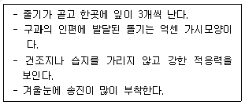
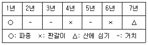

임업종묘기능사 (2008-03-30 기출문제)
1과목: 임의 구분
1. 동질 4배체 XXXX와 YYYY를 교잡시킬 때 나타나는 이질 4배체는?
- XxYy
- XXyy
- xxyy
- XXYY
(정답률: 90%)

2. 산벌작업 방법의 순서가 옳은 것은?
- 예비벌→후벌→하종벌
- 하종벌→후벌→예비벌
- 예비벌→하종벌→후벌
- 하종벌→예비벌→후벌
(정답률: 알수없음)
3. 자가수분을 하는 수목을 F1이후 계속 자식(自殖)시켜 나가면 어떻게 되는가?
- 호모(Homo)가 증가한다.
- 호모(Homo)는 변하지 않는다.
- 호모(Homo)가 감소한다.
- 호모(Homo)는 감소하다가 조금 증가한다.
(정답률: 알수없음)
4. 임목 육종에서 무성번식의 방법을 쓰는 이유 중 가장 중요한 것은?
- 수종에 따라 작업이 간편하고 유성번식이 가능하기 때문이다.
- 시일이 단축되고 변이 창출이 용이하기 때문이다.
- 유성번식으로는 대량번식이 어렵기 때문이다.
- 모체와 똑같은 유전형질을 가지는 개체를 얻을 수 있기 때문이다.
(정답률: 알수없음)
5. 0.1㏊의 면적에 식물체내 인산을 6㎏ 보충하고자 한다. 이것을 퇴비로서 충당하고자 한다면 퇴비 시비량은? (단, 퇴비내 인산의 성분율은 0.2%, 흡수율은 15% 이다.)
- 20000㎏
- 30000㎏
- 40000㎏
- 50000㎏
(정답률: 알수없음)
6. 다음 보기와 같은 특성을 지닌 소나무류는?

- 소나무
- 방크스소나무
- 리기다소나무
- 스트로브소나무
(정답률: 알수없음)
7. 현사시나무의 양친수로 옳은 것은?
- 은백양나무와 수원사시나무
- 은백양나무와 은사시나무
- 은백양나무와 사시나무
- 사시나무와 황철나무
(정답률: 알수없음)
8. 용재와 신탄재를 동시에 생산할 수 있는 작업종은?
- 교림작업
- 중림작업
- 왜림작업
- 개벌작업
(정답률: 알수없음)
9. 우리나라 산악지대에서 비교적 잘 자라며 조림수로 이용되는 백양나무라고도 불리우는 버드나무과의 식물은?
- 당버들
- 미류나무
- 양버들
- 사시나무
(정답률: 알수없음)
10. 감수분열이란 어떤 과정을 말하는가?
- 세포수가 반으로 되는 과정
- 생식세포가 만들어지는 과정
- 화분발생이 반으로 되는 과정
- 암술이 반으로 되는 과정
(정답률: 90%)
11. 타가수정 작물이 자식을 거듭하면 현저하게 생활력이 감퇴를 나타내는데 이런 현상을 가리키는 것은?
- 잡종강세
- 불화합성
- 근교약세
- 형질감퇴
(정답률: 알수없음)
12. 다음 중 상록 활엽수로만 짝지어진 것은?
- 사철나무, 오갈피나무 , 일본목련
- 녹나무, 동백나무, 가시나무
- 서어나무, 칠엽수, 좀가시나무
- 신갈나무, 후박나무, 태산목
(정답률: 알수없음)
13. 짧은 갱신기간 중에 이용기에 이른 임목을 몇 번에 나누어 벌채하고 그 임지에 어린 임분을 발생하도록 하는 작업은?
- 간벌작업
- 개벌작업
- 모수작업
- 산벌작업
(정답률: 70%)
14. 클론에 대한 설명으로 거리가 먼 것은?
- 클론은 영양계라고도 한다.
- 가지, 뿌리 등 영양기관의 일부로 만들어진다 .
- 접목품종은 모두 클론이다.
- 잡종강세를 이용하여 생산된 나무이다.
(정답률: 40%)
15. 강송 1년생의 1m2당 생립기준 및 이식본수로 가장 적당한 것은? (단 파종을 하였을 때)
- 200본
- 400본
- 600본
- 800본
(정답률: 73%)
16. 배수성 육종에 주로 쓰이는 약제는?
- 2,4-D
- 염소산나트륨
- 콜히친
- 지베렐린
(정답률: 알수없음)
17. 파종량과 비료량의 산출 및 잔존주수와 생산묘 조사 등을 실시하는데 편리할 뿐 아니라 묘상의 작업능률이 높고 관배수가 잘 관리되도록 이상적으로 설계한 묘상의 폭과 길이로 가장 적당한 것은?
- 폭 1.0m, 묘상길이 20m
- 폭 2.0m, 묘상길이 20m
- 폭 1.0m, 묘상길이 40m
- 폭 2.0m, 묘상길이 40m
(정답률: 알수없음)
18. 식물세포의 전체형성능 (全體形成能: totipotency)에 대한 설명으로 가장 적합한 것은?
- 하나의 세포로부터 분열하는 완전한 개체로 분화할 수 있는 세포 능력을 의미한다.
- 하나의 세포로부터 분열하는 세포의 모양을 의미한다.
- 하나의 세포로부터 분화된 모든 세포를 의미한다.
- 하나의 세포로부터 분화된 개개의 세포 능력을 의미한다.
(정답률: 알수없음)
19. 벌채 구역내의 성숙한 나무를 한꺼번에 모두 벌채하고 새로운 임분이 조성되도록 하는 갱신방법은 ?
- 개벌작업
- 산벌작업
- 택벌작업
- 왜림작업
(정답률: 알수없음)
20. 다음 표와 같은 과정으로 묘목을 양성하는 수종은?

- 소나무류
- 낙엽송
- 가문비나무류
- 삼나무
(정답률: 알수없음)
2과목: 임의 구분
21. 차대검정에 대한 설명으로 틀린 것은?
- 자식대의 생육사항을 통해 양친의 우열을 판단하고자 하는 것이다.
- 차대검정의 결과는 다음 세대 채종원 조성의 기초가 된다.
- 차대검정림은 임지조건이 가급적 균일해야 한다.
- 차대검정림의 조성시 반복의 필요성은 없다.
(정답률: 92%)
22. 발아율 90%, 발아세 50%, 순량율 90%인 종자의 효율은?
- 14%
- 40%
- 81%
- 90%
(정답률: 알수없음)
23. 다음 수종 중 일반적으로 삽목 발근이 가장 어려운 수종은?
- 호두나무
- 비자나무
- 주목
- 동백나무
(정답률: 알수없음)
24. 일정한 수령을 기준으로 하여 그때의 평균 수고로써 표현한 값을 무엇이라 하는가?
- C-D지두
- 지위지수
- 밀도지수
- T/R율
(정답률: 82%)
25. 접목의 목적으로 거리가 먼 것은?
- 돌연변이 유도
- 클론 보존
- 수확기 단축
- 개화결실 촉진
(정답률: 알수없음)
26. 꽃가루가 암술머리에 도달하는 것을 무엇이라고 하는가?
- 수정
- 수분
- 화분 발아
- 화분 결합
(정답률: 알수없음)
27. 한 무리에서 좋은 형질만을 골라 번식시키는 방법은?
- 선발법
- 교잡법
- 잡종강세이용법
- 돌연변이이용법
(정답률: 알수없음)
28. 외생균근이 잘 발달하는 나무는?
- 편백
- 칠엽수
- 소나무
- 참나무
(정답률: 알수없음)
29. 다음 중 채종원 관리에서 가장 중요시되는 것은?
- 하예작업
- 토양개량
- 관수작업
- 개화결실 촉진작업
(정답률: 알수없음)
30. TTC(테트리졸리움)에 의한 발아 시험시 충실한 종자에 나타나는 현상은?
- 흰색으로 변한다.
- 적색으로 변한다.
- 녹색으로 변한다.
- 흑색으로 변한다.
(정답률: 알수없음)
31. 돌연변이육종법 중 방사선 조사처리에 Co60은 어떤 광파를 내는가?
- γ선
- β선
- 적외선
- 자외선
(정답률: 알수없음)
32. 첫 번째 잡목 솎아내기의 시기는 일반적으로 밑깎기가 끝난 뒤 몇 년이 지난 후에 실시하는가?
- 10년 이내
- 2~3년
- 5~6년
- 10년 이상
(정답률: 알수없음)
33. 침수법에 의해서도 발아가 촉진되는 종자는?
- 옻나무
- 호두나무
- 낙엽송
- 잣나무
(정답률: 알수없음)
34. 채종원 조성에 대한 설명으로 틀린 것은?
- 경사가 급하지 않고 교통이 편리한 곳을 택한다.
- 부근 임분에서 화분이 공급되는 일이 없게 격리시켜야한다.
- 클론의 개체가 서로 인접하는 일이 없도록 클론을 배치하여 심는다.
- 클론의 수는 될수록 적게 하고 20개 이하로 한다.
(정답률: 알수없음)
35. 다음 중 교잡 친화성이 가장 높은 것은?
- 종내교잡
- 종간교잡
- 속간교잡
- 과간교잡
(정답률: 46%)
36. 묘목식재를 위한 지존작업시 산죽, 칡 등을 고사시키기 위해 사용되는 약제는?
- 글리포세이트
- 비산연
- 석회보르도액
- 수산화나트 륨
(정답률: 알수없음)
37. 다음 중 현행 간벌법(하층 간벌법)에서 간벌 대상목이 아닌 것은?
- 경제성 없는 유해수종 및 잡관목과 덩굴류
- 피해목과 생장이 불량한 도태 대상목
- 피압목
- 우량목 생육에 피해를 주지 않는 하층식생
(정답률: 100%)
38. 산지에 묘목을 식재한 후 가장 먼저 해야 할 무육작업은?
- 풀베기
- 가지치기
- 제벌
- 간벌
(정답률: 91%)
39. 어떤 수목의 염색체의 기본수가 n이라고 할 때, 이 수목의 생식세포의 염색체수는?
- n
- 2n
- 3n
- 4n
(정답률: 알수없음)
40. 토양입자 사이에 머물러 있는 수분으로서 대부분의 수목에 의해 흡수 이용되는 수분의 형태는?
- 화합수
- 결합수
- 모관수
- 중력수
(정답률: 알수없음)
3과목: 임의 구분
41. 서로 다른 속간에 접목을 실시하고 있는 경우는?
- 탱자나무에 감귤나무
- 곰솔에 섬잣나무
- 가래나무에 호두나무
- 고욤나무에 감나무
(정답률: 알수없음)
42. 파종상에서 1년 판갈이 된 뒤 판갈이상에서 1년이 지난 만 2년생 묘목의 나이를 표시한 것은?
- 2-0묘
- 1-1묘
- 1-1-1묘
- 1/2묘
(정답률: 알수없음)
43. 다음 수종의 종자 중 성숙기가 가장 이른 것은?
- 사시나무
- 은행나무
- 백합나무
- 주목
(정답률: 알수없음)
44. 다음 중 품종의 변이가 가장 큰 것은?
- 삽목묘
- 접목묘
- 취목묘
- 실생묘
(정답률: 알수없음)
45. 다음 중 수형목이 가장 쉽게 선발되는 임분은?
- 인공동령림
- 천염림
- 이령림
- 천연하층림
(정답률: 알수없음)
46. 주로 취약한 나무나 벌채한 나무에 기생하는 특성이 있어, 먹이나무를 설치하여 유인ㆍ포살할 수 있는 해충은?
- 소나무좀
- 포도유리나방
- 오리나무잎벌 레
- 매미나방
(정답률: 알수없음)
47. 소나무와 곰솔의 새잎에 벌레혹(충영)을 만들어 피해를 주는 해충은?
- 소나무좀
- 솔잎혹파리
- 솔나방
- 소나무재선충
(정답률: 알수없음)
48. 대추나무 빗자루병, 오동나무 빗자루병 그리고 뽕나무 오갈병은 어느 병원에 의한 것인가?
- 바이러스
- 파이토플라즈마
- 세균
- 진균
(정답률: 100%)
49. 늦은 봄부터 늦가을까지 주로 묘목에 많이 발생하는 냉해로서 잎의 뒷면에 표징이 나타나며, 어린 눈을 침해하면 잎이 오그라들고 기형이 되는 것은?
- 소나무 그을음병
- 잣나무 털녹병
- 밤나무 흰가루병
- 소나무 혹병
(정답률: 알수없음)
50. 길항미생물이 식물병을 방제하는 작용기작으로 틀린 것은?
- 미생물이 항생물질을 생산한다.
- 미생물이 식물을 자극시켜 지베렐린을 유도한다.
- 미생물이 병원균에 병을 일의킨다.
- 미생물이 병원균과 양분경쟁을 한다.
(정답률: 알수없음)
51. 참나무류가 병의 발생에 밀접하게 관계하는 병은?
- 소나무 혹병
- 소나무 잎녹병
- 잣나무 털녹병
- 향나무 녹병
(정답률: 알수없음)
52. 식엽성 해충으로 옳은 것은?
- 말매미
- 참나무재주나방
- 밤나무왕진딧물
- 소나무가루깍지벌레
(정답률: 알수없음)
53. 우리나라 산림 해충 중에서 많은 종류를 차지하고 있으며, 대개 외골격이 발달하여 단단하며, 씹는 입틀을 가지고 완전변태를 하는 것은?
- 딱정벌레목
- 나비목
- 노린재목
- 벌목
(정답률: 알수없음)
54. 산불 발생의 설명으로 틀린 것은?
- 활엽수보다 침엽수에서 산불이 일어나기 쉽다.
- 양수는 음수에 비하여 산불의 위험성이 높다.
- 나이가 많은 큰나무 숲이 어리고 작은 숲보다 산불의 위험도가 크다.
- 3~5월의 건조시에 산불이 가장 많이 일어난다.
(정답률: 알수없음)
55. 다음 중 수관화 발생은 상대습도(관계습도)가 얼마일 때 가장 발생되기 쉬운가?
- 25% 이하
- 30~40%
- 50~60%
- 60% 이상
(정답률: 알수없음)
56. 묘상의 서릿발 피해를 막기 위한 방법으로 적당하지 않은 것은?
- 모래나 유기물을 섞어 토질을 개량한다.
- 배수를 좋게 하여 토양수분을 감소시킨다.
- 점토질 토양을 섞어 토질을 개선하여 준다.
- 짚이나 왕겨 또는 낙엽 등으로 덮어준다.
(정답률: 알수없음)
57. 응애류에 대해서만 선택적으로 효과가 있는 약제는?
- 살균제
- 살충제
- 살비제
- 살서제
(정답률: 90%)
58. 수병의 예방법으로 임업적(생태적) 방제법과 거리가 가장 먼 것은?
- 그 지역에 알맞은 조림 수종의 선택
- 위생법에 의한 철저한 식물 검역 제도 도입
- 단순림 보다는 침엽수와 활엽수의 혼효림 조성
- 육림작업을 적기에 실시하고, 벌채를 벌기령에 맞추어 실시
(정답률: 알수없음)
59. 1년에 1회 발생하며 5령충으로 월동하는 것은?
- 솔나방
- 흰불나방
- 매미나방
- 어스랭이나방
(정답률: 82%)
60. 살충제의 사용 형태에 대한 설명으로 틀린 것은?
- 분제 살포는 물이 없는 곳에서도 사용할 수 있어 편리하나 약제의 가격이 좀 비싼 편이며, 액제에 비하여 고착성이 떨어진다.
- 입제는 구형, 원통형 또는 뷸규칙형 등이 있으며, 입제의 살표는 살립기를 사용하거나 고무장갑을 끼고 뿌릴수 있어 편리하다.
- 훈증제는 휘발성이 강한 물질로 독가스를 내게 하는 것으로 보통 밀폐가 가능한 곳에서 사용한다.
- 연무제(演霧劑) 살포는 살포액 입자를 연무질로 하여 살포하는 것으로 미립자가 오랜 동안 공중에 떠 있을수 있도록 바람이 부는 오후에 사용하는 것이 효과적이다.
(정답률: 알수없음)